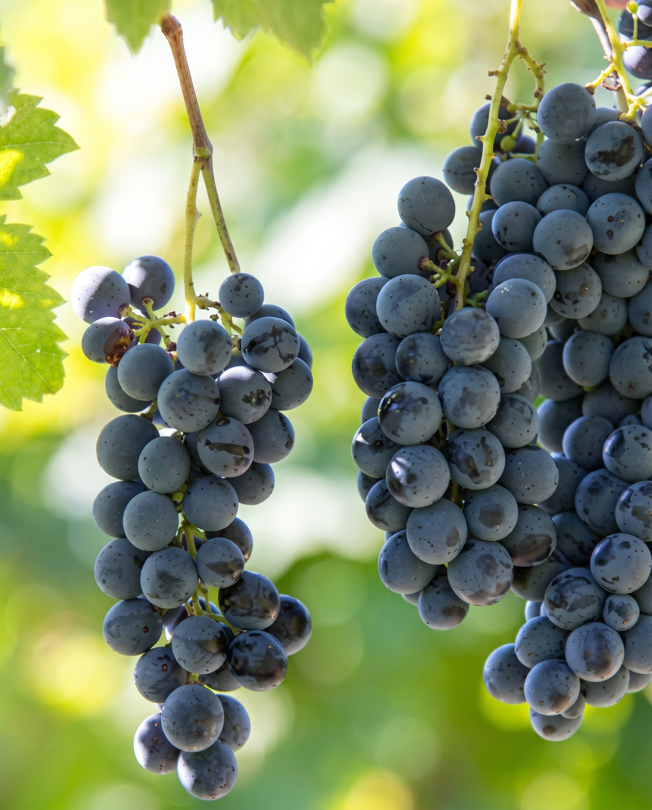
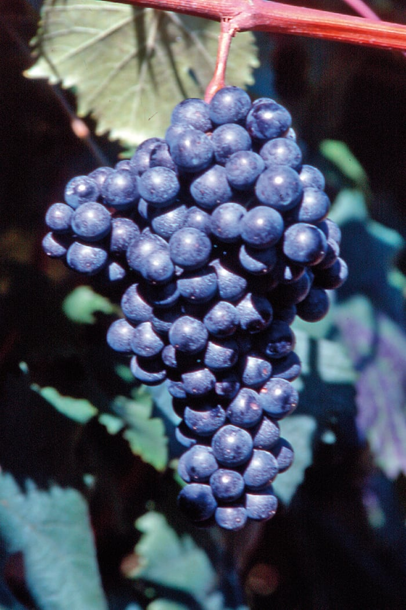
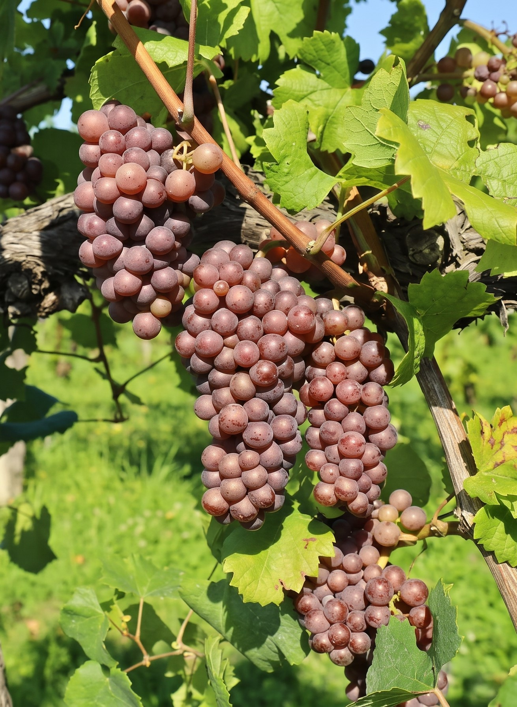
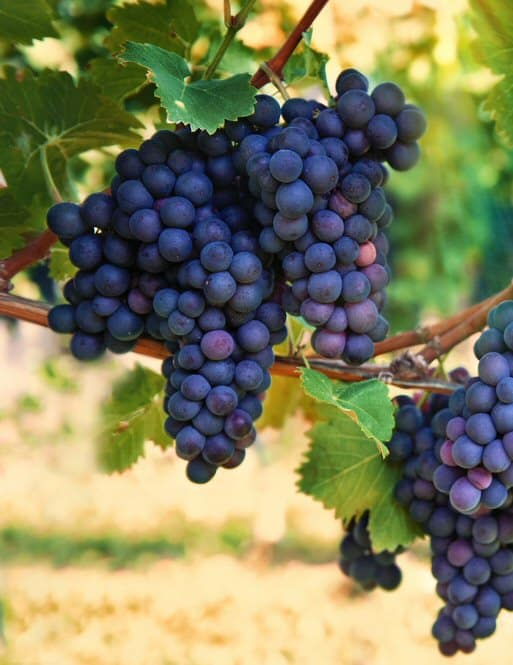

I vini rossi dei Colli Orientali del Friuli esprimono il carattere fiero e minerale della ponca: vitigni storici carichi di spezie, freschezza ed eleganza.
Nobile, fresco, vibrante, con trama tannica raffinata e un sorso profondo
Inconfondibile sentore varietale di pepe verde in grani, piccoli frutti di bosco e violetta
Carni rosse alla brace, selvaggina da piuma e Montasio di media stagionatura

Asciutto, vigoroso, con piacevole acidità tipica e spiccata sapidità minerale
Mora selvatica, marasca matura e lievi sfumature vegetali e speziate
Piatti della tradizione friulana: frico con polenta, musetto con brovada e spezzatini rustici

Austeri, fortemente tannici in gioventù e straordinariamente complessi dopo molti anni di botte
Cuoio, foglie secche, prugna cotta, amarena sotto spirito e cacao fondente
Grandi stracotti di manzo, lepre in salmì e formaggi erborinati molto invecchiati

Caldo, morbido, avvolgente, con tannini setosi e una struttura ricca ed equilibrata
Amarena matura, prugna, frutti di bosco a bacca scura, cacao e una leggera sfumatura speziata di vaniglia
Arrosti di vitello, tagliata di manzo, faraona ripiena e formaggi a pasta dura di media stagionatura
